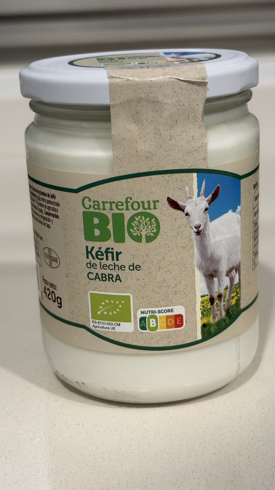
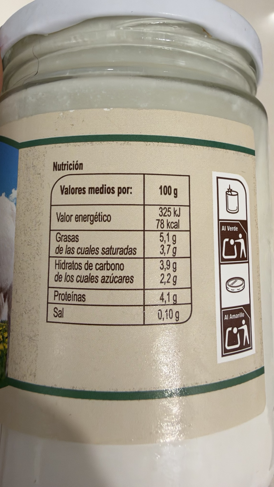
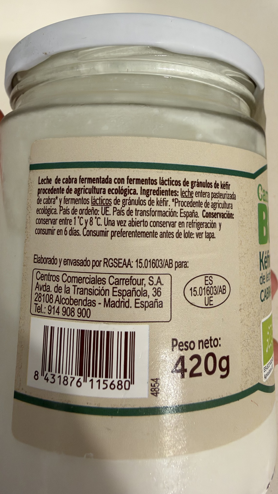

Kéfir de leche de cabra
Kéfir de leche de cabra ecológico, en tarro de cristal de 420 g.
Peso neto: 420 g. Nutri-Score B según el envase fotografiado.
Precio de referencia
2,99 € · 7,12 €/kg
Dónde lo compro
Carrefour Los Rosales
14/10/2026
Por qué lo uso
Es uno de mis productos favoritos para tomar como tentempié o postre.
Cómo lo tomo
Lo tomo solo o mezclado con frutos secos o fruta fresca. A veces añado 2 cucharaditas de lino molido para aportar fibra.
Composición
leche entera pasteurizada de cabra procedente de agricultura ecológica, fermentos lácticos de gránulos de kéfir.
Alérgenos: leche.
Conservar entre 1 °C y 8 °C. Una vez abierto, conservar en refrigeración y consumir en 6 días.
País de ordeño: UE. País de transformación: España.
Valores por 100 g
| Energía | 325 kJ / 78 kcal |
|---|---|
| Grasas | 5,1 g |
| De las cuales saturadas | 3,7 g |
| Hidratos de carbono | 3,9 g |
| De los cuales azúcares | 2,2 g |
| Fibra | No declarada |
| Proteínas | 4,1 g |
| Sal | 0,1 g |

Valoración de Yuka
88 / 100 · Excelente
Yuka muestra todos los aspectos visibles como positivos. Sus datos nutricionales difieren de la etiqueta del tarro fotografiado: proteínas 3,4 frente a 4,1 g; energía 79 frente a 78 kcal; azúcares 3,9 frente a 2,2 g; sal 0,09 frente a 0,10 g; saturadas 3 frente a 3,7 g, por 100 g. Se mantienen los valores del envase en la tabla nutricional; no se presupone la causa de las diferencias.
Aspectos positivos según Yuka
- Aditivos · Sin aditivos: Sin sustancia peligrosa
- Ecológico · Ecológico: Sin pesticida de síntesis
- Proteínas · 3,4 g por 100 g: Algunas proteínas
- Valor energético · 79 kcal por 100 g: Bajo en calorías
- Azúcar · 3,9 g por 100 g: Bajo en azúcar
- Sal · 0,09 g por 100 g: Bajo en sal
- Grasas saturadas · 3 g por 100 g: Impacto bajo
Fuente: captura de Yuka aportada el 15/10/2026.
Ingredientes y tabla nutricional del envase

